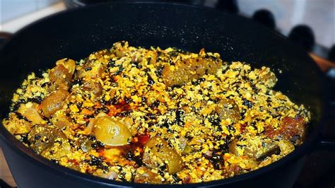

Egusi soup

The Nigerian local soup one for the most common soup prepared from the easthern past of Nigerian
very delicous when nicely cooked by a good chef or cook.
Ingredient
- fresh bitterleave
- melon seed
- stock fish
- palm oil
- goat meat
Steps in making Egusi soup
- Measure out ¾ cup (54 g) of egusi or pumpkin seeds
- Blend the seeds on HIGH for 30-40 seconds
- Add a little amount of water until the mixture becomes a thick paste
- Add 2 pounds (910 g) of fresh shrimp and simmer for 10 minutes
- Add the spinach and egusi paste and simmer for 7-10 more minutes
- Serve the egusi soup over rice and enjoy